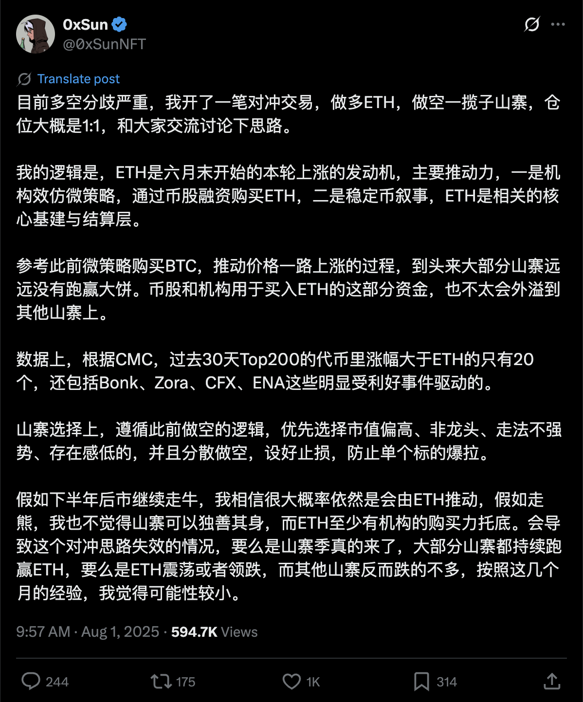
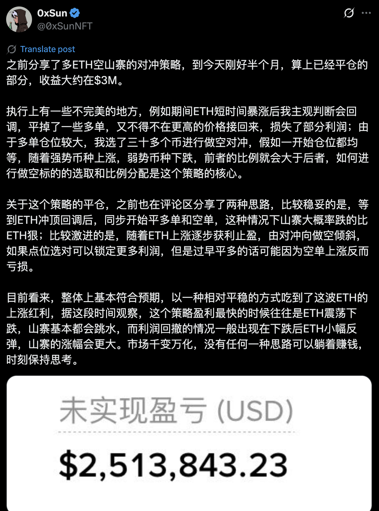

P8-分享一组对冲策略，做多龙头做空山寨的可行性分析🧐
在做交易的都知道，收益越大，风险也越大。
没有人能够预测市场，预测涨跌。因此当你在进行单一走势的押注的时候，其实就等价于你在赌博。正所谓盈亏同源，你这次因为运气赌对赚来的也可能在下次因为运气赌错再亏回去。
那么有没有一种方式可以实现稳定的收益，不求多，但求稳，稳中求胜。当然有，比如说你稳定的投资dca比特币和以太坊，拿得住的话到现在都是赚钱的，也就是我们前面推荐的投资方法，用时间赚钱。那么有没有别的办法呢？我们今天讨论的就是另一种，叫做对冲。
我们经常可以看到一些人的简介写着在对冲基金工作。我也是经常看到对冲的词然后就去研究了一下。
首先什么是对冲？很简单举个例子：以btc和eth为例，大部分时间比特币和以太坊的涨跌是相关联的，涨了一起涨，跌了一起跌。但这个幅度不是一样的。就是如果你觉得以太坊未来表现要比比特币好的话，那你就可以做多以太坊做空比特币，其实也就是做多以太比特的汇率对。因为你觉得以太涨的会比比特好，所以涨的时候你其实是赚的，跌的时候因为你做空比特币有对冲，那么你就可以少亏点。和直接的多空相比就是涨的时候少赚点，亏的时候少亏点，出发点就是没有人可以预测短期的涨跌，没有人可以预测市场。
再比如说风险资产和避险资产，他们在同一时间可能就是一个涨一个跌的。那你可以同时做多两个资产，也是做一个对冲的作用。
风险资产（高风险、高收益潜力）：这些资产价格通常在经济繁荣、市场情绪乐观时上涨，在恐慌时下跌。如：股票，加密货币
避险资产（低风险、保值性强）：这些资产在市场动荡、危机或衰退时，资金会流入其中。黄金、白银（历史上最经典的避险资产），美元
我觉得对冲其实就是能否找到尽量小的风险尽量大的收益，比如确定的趋势。
其实演化一下就是做多龙头，做空山寨
随着时间，市场的流动性会被优质项目吸走
- 做多龙头价值币，做空垃圾币空气币山寨币。
- 设置好止损，防止一些妖怪币暴涨暴跌。
- 做多和做空同等仓位其实会把资金费率也抵消掉
最后我们总结一下：花里胡哨，不如直接无脑DCA囤比特币和以太坊。和直接囤币的不同之处就是需要点操作，原理也是用时间换钱，但需要依靠牛熊循环，如果说币圈迎来长牛的话，操作就更难一点了。
相关文章：
https://x.com/0xSunNFT/status/1951099879906058707
https://x.com/0xSunNFT/status/1955498054355911140
https://x.com/0xSunNFT/status/1956293236303257630
https://cpython666.github.io/web3/basics/rules.html
推文备份

